List of MicroSims for Semiconductor Physics
Interactive Micro Simulations to help students learn the foundations of semiconductor physics — crystal structure, quantum mechanics, band theory, carrier statistics, and defects. Each MicroSim is a small, self-contained interactive that runs in the browser.
-
Crystal Defect Hierarchy Network
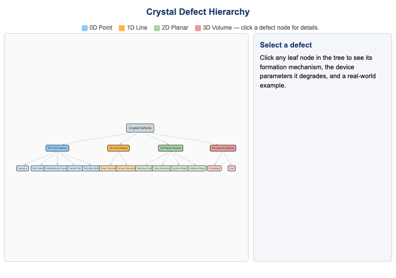
Clickable hierarchical tree of crystal defects classified by dimensionality (0D point, 1D line, 2D planar, 3D volume). Click any leaf node for the formation mechanism, degraded device parameters, and a real-world example.
-
Cubic Crystal Structure Explorer
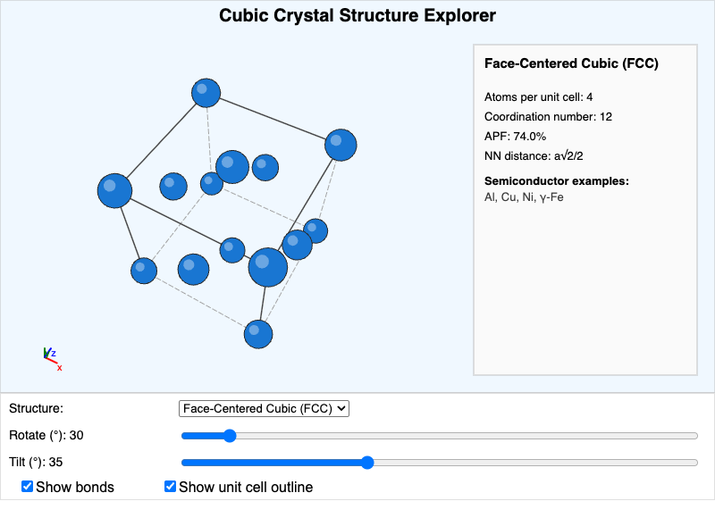
3D conventional unit cells for simple cubic, BCC, FCC, diamond, and zincblende structures with rotation and tilt controls. Reports atoms per cell, coordination number, APF, and nearest-neighbor distance.
-
Dimensionality and Density of States Explorer
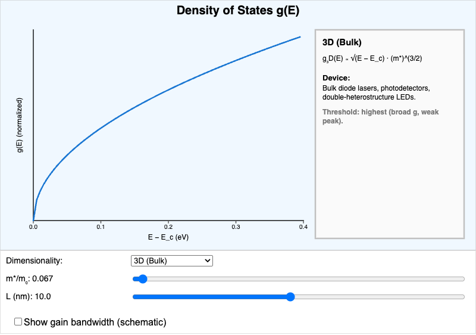
Plots g(E) for 3D bulk, 2D quantum well, 1D quantum wire, and 0D quantum dot systems with adjustable effective mass and confinement width. Shows how DOS shape drives laser threshold.
-
Direct vs. Indirect Bandgap E-k Explorer
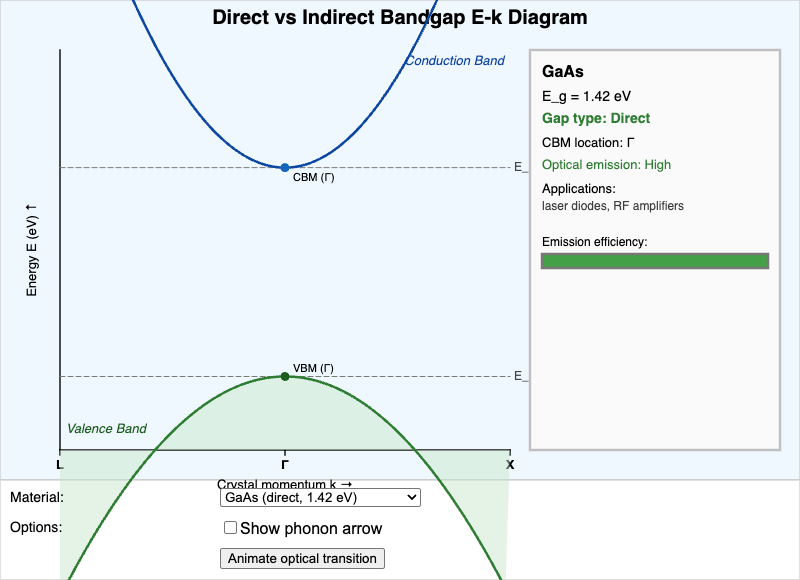
E-k diagrams for GaAs, InP, GaN, Silicon, and Germanium showing whether the CBM and VBM coincide in k-space. Animates the optical transition and the phonon assist required for indirect gaps.
-
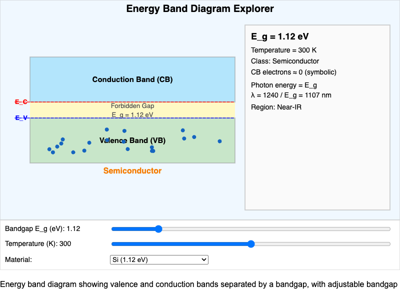
Interactive conduction band, valence band, and forbidden gap with adjustable E_g and temperature. Classifies the material as conductor, semiconductor, or insulator and computes the emission wavelength.
-
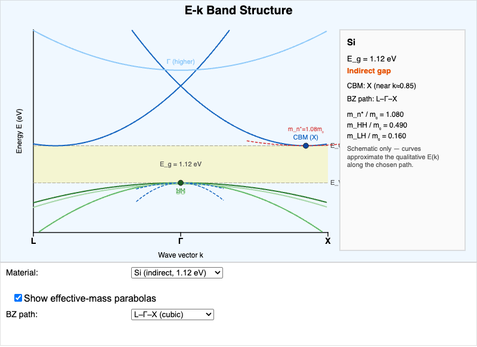
Schematic E-k bands along high-symmetry directions for Si, Ge, GaAs, GaN, and the free-electron case. Toggle effective-mass parabolas to read m_n*, m_HH, and m_LH off the curvature.
-
Fermi-Dirac Distribution and Carrier Concentration Explorer
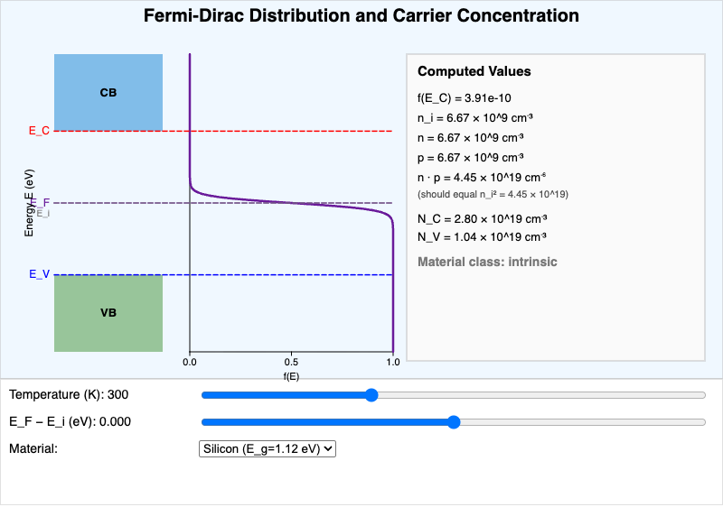
Fermi-Dirac sigmoid plotted alongside an energy band diagram. Adjust temperature and Fermi level to see electron and hole concentrations, the n·p product, and the n/p/intrinsic classification update in real time.
-
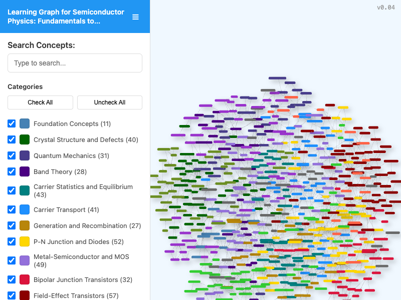
Interactive viewer for the course learning graph. Search for concepts, filter by taxonomy category, and pan/zoom to explore dependency relationships across the 200 concepts in the course.
-
Miller Indices Crystal Plane Explorer
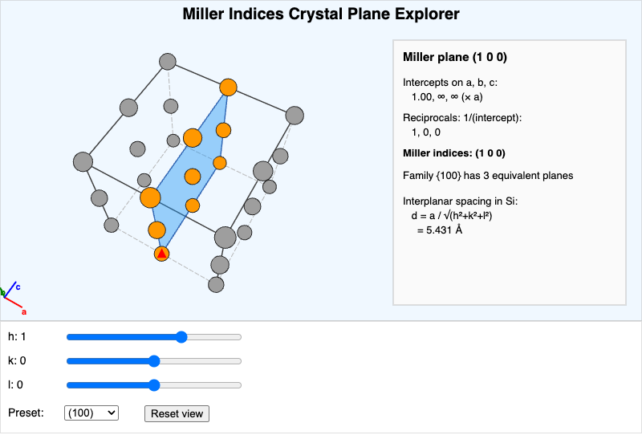
Visualize the (hkl) plane through a 2×2×2 cubic supercell. Sliders for h, k, l plus a preset menu. Shows intercepts, reciprocals, the family count, and the interplanar spacing in silicon.
-
Particle in a Box Energy Level Explorer
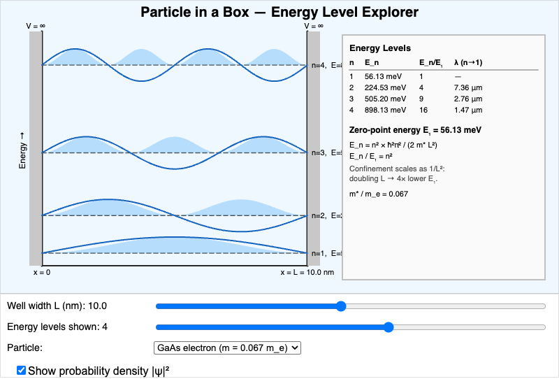
Quantized energy levels and wave functions of a 1D infinite well. Adjust the width L, the particle effective mass, and the number of levels shown. Optionally overlay |ψ|² probability densities.
-
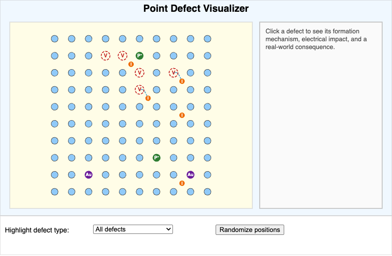
Top-down view of a 10×10 lattice cross-section with vacancies, self-interstitials, substitutional donors (P), substitutional deep traps (Au), and Frenkel pairs. Click any defect to see its mechanism and electrical impact.
-
Quantum Tunneling Probability Explorer
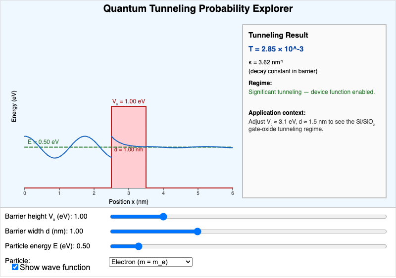
Rectangular potential barrier with adjustable height V₀, width d, and incident energy E. Shows the wave function shape and the exact transmission probability T, including the gate-oxide leakage regime that drove high-κ dielectrics.
-
Semiconductor Lattice Constant and Bandgap Map
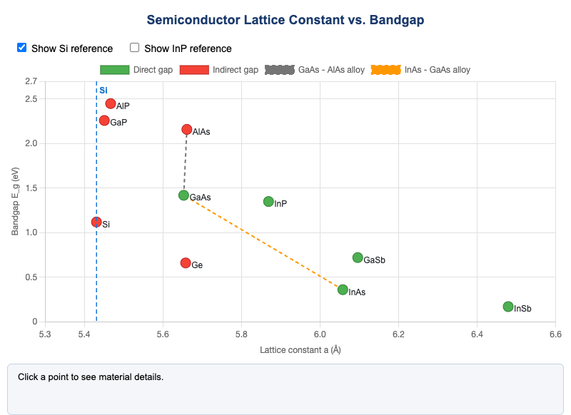
Scatter plot of common III-V and group-IV semiconductors by lattice constant and bandgap. Direct-gap (green) vs indirect-gap (red) color coding with alloy interpolation lines for heterostructure design.
-
Temperature Dependence of n_i Explorer
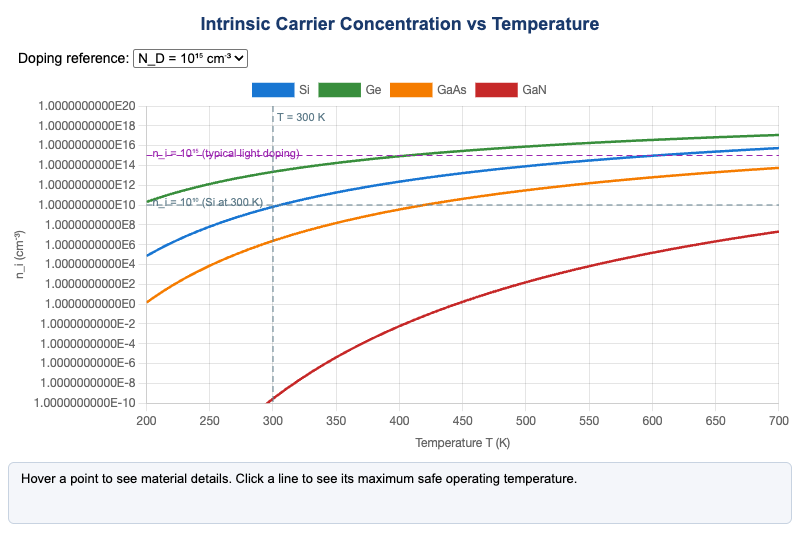
Intrinsic carrier concentration n_i(T) on a log scale for Si, Ge, GaAs, and GaN from 200–700 K. Click a line to see the maximum safe operating temperature for a chosen doping level.